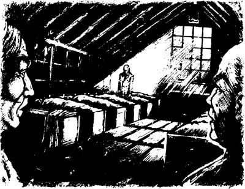

Tại quán rượu London, anh Harker dẫn chúng tôi đến một căn phòng lớn. Có một cửa sổ lớn ở cuối phòng. Ánh trăng chiếu qua cửa sổ vào trong phòng.
Có mười hai giường cho bồi thẩm đoàn. Ở gần cửa, có một chiếc giường khác. Đó là giường dành cho anh Harker. Viên cảnh sát đặt chiếc giường của mình trước cửa.
Anh ta nói: ‘Tôi sẽ ngủ ở đây. Sáng mai trước khi rời khỏi phòng này.’
———
Vào ngày xét xử thứ hai, luật sư của bên công tố đã nói cho chúng tôi về nạn nhân.
Tối hôm đó, những thành viên khác trong bồi thẩm đoàn nhanh chóng đi ngủ. Nhưng tôi không thấy mệt. Tôi không ngủ được. Tôi ngồi dậy và đi về phía anh Harker. Anh đang ngồi trên giường và đọc sách một cách lặng lẽ.
Viên cảnh sát nói: ‘Xin mời ngồi, anh Fotherley.’
Anh Harker đã trò chuyện với tôi rất lâu. Anh là một ông lão rất thú vị. Ông biết về nhiều phiên tòa xét xử vụ giết người. Chúng tôi đã nói về những kẻ giết người khét tiếng. Chẳng mấy chốc, đã đến nửa đêm.
Tôi nói: ‘Tôi phải đi ngủ thôi.’ Tôi chạm vào cánh tay anh Harker. ‘Chúc ngủ ngon.’
Đột nhiên, cơ thể viên cảnh sát run lên.
Anh Harker nói: ‘Tôi thấy lạnh quá. Anh chạm vào tôi. Và đột nhiên, tôi thấy rất lạnh. Tại sao?’
Rồi anh Harker nhìn về phía cửa sổ.
Ông nói một cách nhỏ nhẹ: ‘Đó là ai vậy, anh Fotherley? Tất cả những người còn lại đều đã ngủ cả rồi.’
Tôi nhìn thấy một thứ gì đó bên cạnh cửa sổ. Đó là cái gì vậy? Đó là hình bóng một người đàn ông! Ông ta là Người đàn ông tái nhợt ở Piccadilly – người đàn ông có đôi mắt nhìn chằm chằm!
Bóng đen đi từ giường này sang giường khác. Người đàn ông dừng lại ở mỗi chiếc giường một lúc. Ông nhìn xuống người đàn ông đang ngủ trên giường, sau đó đi đến chiếc giường tiếp theo.

Cuối cùng, bóng người đó đi trở lại cửa sổ rồi đột nhiên biến mất!
Tôi trở về giường của mình nhưng đêm đó tôi đã không ngủ được ngon.
Sáng hôm sau, Black nói: ‘Đêm qua tôi nằm mơ thấy một giấc mơ lạ lắm. Tôi mơ thấy người đã bị giết. Anh ấy muốn nói với tôi điều gì đó.’
Một thành viên khác của bồi thẩm đoàn nói: ‘Tôi cũng mơ thấy thế!’ Tất cả những thành viên còn lại của bồi thẩm đoàn cũng đã mơ thấy về người đàn ông đã bị giết. Nhưng tôi thì không mơ thấy. Và anh Harker cũng không mơ. Nhưng chúng tôi đã nhìn thấy một bóng người lạ. Liệu chúng tôi có gặp phải ma không?
———
Vào ngày xét xử thứ ba và thứ tư, bồi thẩm đoàn đã nghe thêm nhiều bằng chứng. Mỗi buổi tối, tại nhà trọ, chúng tôi lại bàn về phiên tòa.
Vào buổi tối của ngày thứ tư, chúng tôi đang ngồi trong phòng của mình tại quán rượu London.
Tôi nói: ‘Bị cáo chính là kẻ giết người.’
Tám thành viên trong bồi thẩm đoàn đồng ý với tôi. Nhưng ba người còn lại thì không đồng ý. Họ thật ngu ngốc. Chúng đã đưa ra quyết định từ ngày đầu tiên. Quyết định của chúng là – Vô tội! Họ đã không nghe những bằng chứng được trình bày. Họ sẽ không nghe đâu. Họ đã nói rất nhiều điều ngu ngốc.
Đột nhiên, tôi nhìn thấy Người đàn ông tái nhợt. Ông ta đang đứng gần cửa sổ và nhìn tôi. Ông chỉ tay về phía ba người đàn ông ngu ngốc. Ông nhìn tôi lần nữa rồi biến mất.
Tôi cố nói chuyện với ba người đàn ông ngu ngốc đó. Nhưng họ không nghe tôi.
Họ nói: ‘Bị cáo vô tội.’